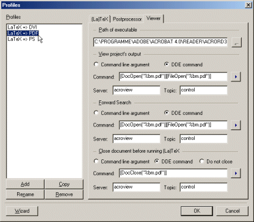

The tab 'Viewer' allows to define the applications used to view
the files generated by this profile.

The meanings of the different controls:
- 'Path of executable'
- The full path of the application used to view the files generated
by this profile.
- 'View project's output'
- Command executed to view the project's output.
This command will be executed, if the menu item 'Build|View Output'
is choosen and no open document in TeXnicCenter.
This command can be either a command line or a DDE-command (see below).
- 'Forward Search'
- Command executed to view output file, corresponding to the paragraph
in the source file the text cursor of the editor is currently placed on.
This command will be executed, if the menu item
'Build|View Output' choosen and is no open document in
TeXnicCenter.
This command can be either a command line or a DDE-command (see below).
- 'Close document before running (La)TeX'
- Command executed to close a previously generated output file open in the
viewer, before generating it anew by choosing
'Build|Build Output'.
This command will be executed, if the menu item
'Build|Build Output' is choosen directly before the build
process starts. Specify this command only, when using a viewer, which
opens files exclusively, so that no other application can access the
output file with write access, while opened in the viewer
(i.e. Adobe AcrobatReader works that way). If the compiler tries to generate
a new output file, it will fail, because the still open file can not be
overwriten. Specify a command here to close the file in the viewer, before
the compiler is executed.
This command can be either a command line or a DDE-command (see below).
All the commands on this page can be normal command lines or
DDE commands (see there).
A normal command line will be passed to the application during its start.
Same procedure as it is call from a command line.
The meanings of the fields for a command are:
- 'Command line argument'
- Choose to specify a normal command line.
- 'DDE command'
- Choose to specify a DDE command.
- 'Command'
- Enter the command line to pass to the executable here, if the option
'Command line argument' was chosen or enter the DDE command to
send to the viewer, if the option 'DDE command' was choosen.
You can use place holders to specify
dynamic arguments.
- 'Server' (only available for 'DDE command')
- Specify the server name used to connect to the DDE server (the viewer).
For more information please refer to the manual of the viewer.
- 'Topic' (only available for 'DDE command')
- Specify the DDE topic the DDE command belongs to. For more information
please refer to the manual of the viewer.
Most applications are expecting the topic "System" here.